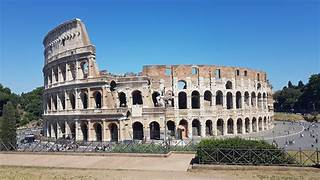

Bem-vindo Alguns Pontos Turisticos
Torre Eiffel - Paris

A Torre Eiffel é o cartão postal de Paris. Possui 324 metros de altura e teve sua construção finalizada 1.889.
COLISEU - Roma
O Coliseu é um anfiteatro oval no centro da cidade de Roma. Sua construção foi iniciada em 72 d.C. pelo imperador Vespasiano e concluída em 80 pelo seu sucessor, o herdeiro Tito.
Big ben - Londres

Big Ben é o apelido do grande sino do relógio na extremidade leste do parlamento. É outro dos símbolos da cidade de Londres.